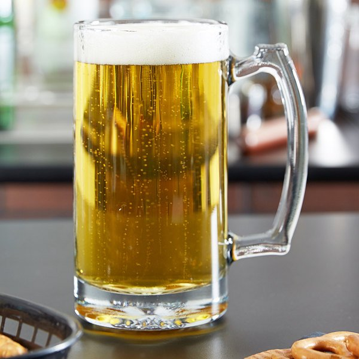
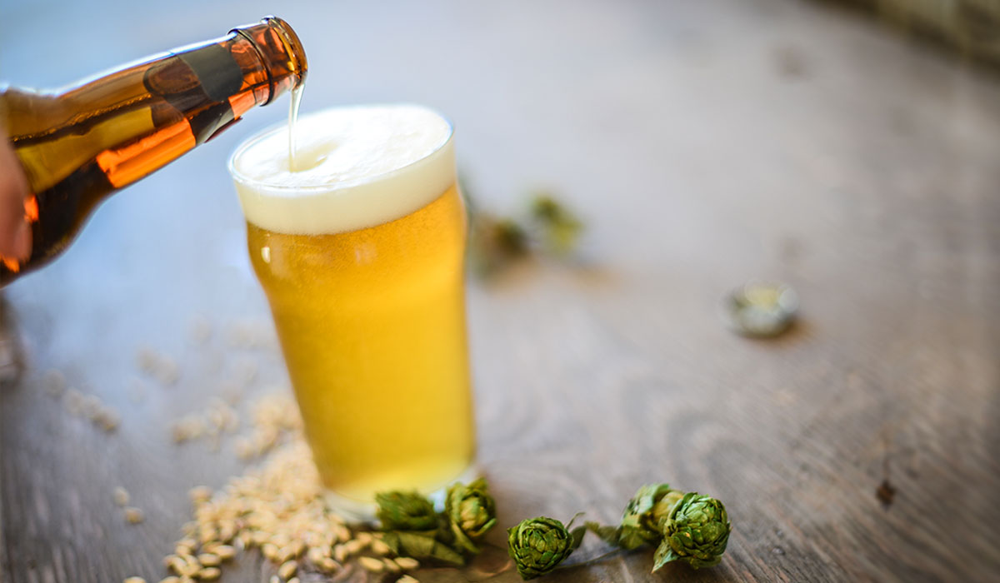
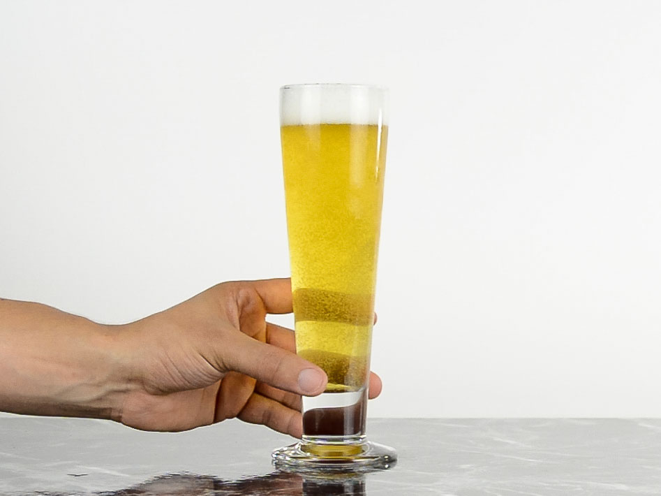
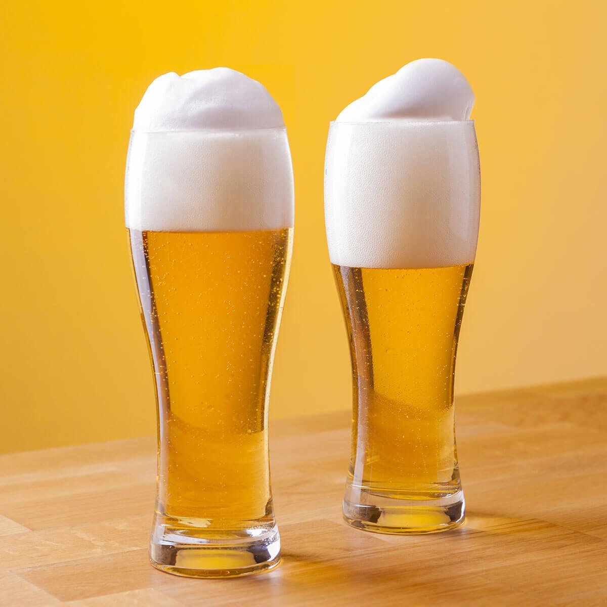
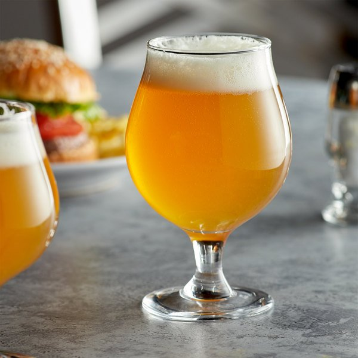

beer etiquette.
Proper serving of beer in a glass.





Как наливать пиво в бокал?
Стакан наклоняем примерно на 45°.
Наливаем пиво, держа бутылку или банку примерно на 3 см от края бокала. Напиток в идеале должен стекать по стенке стакана.
Когда бокал уже наполовину полон, ставим его ровно и продолжает наливать пиво — но уже по центру. До тех пор, пока пенная шапка немного не возвысится над краем стакана.
Как правильно пить пиво?
Перед тем как сделать первый глоток вдохните аромат пива. Попробуйте разложить его «по нотам». Впрочем, все воспринимают запахи по-разному. Не расстраивайтесь, если не почувствуете чего-то «особенного». Первый глоток наверняка подарит куда больше эмоций. Наберите в рот достаточный объем напитка, который позволит омыть все вкусовые рецепторы. Маленький глоток — не пивная история.
С чем пить пиво?
Выбор закуски к пиву — огромный простор для гастрономических экспериментов. И это, конечно, не одни только чипсы с сухариками. Да, привычно, но скучнее не бывает.К пиву подают сыры, мясо и мясные деликатесы, копченую и вяленую рыбу, морепродукты, ризотто, пиццу, фастфуд, пасту, даже фрукты и десерты. Но конкретный выбор закуски будет зависеть от стиля пива — на это и нужно ориентироваться.
Долго хранить
Основные типы пива достигают пика своей «зрелости» сразу после того, как покидают производство и отправляются в магазин. Вкус и аромат напитков достаточно быстро «стареют» — вот почему пенное не рекомендуется долго хранить. Даже в холодильнике при правильной температуре. Есть риск, что, открыв свое любимое пиво через пару месяцев после покупки, вы обнаружите в бутылке совсем «не тот» напиток.